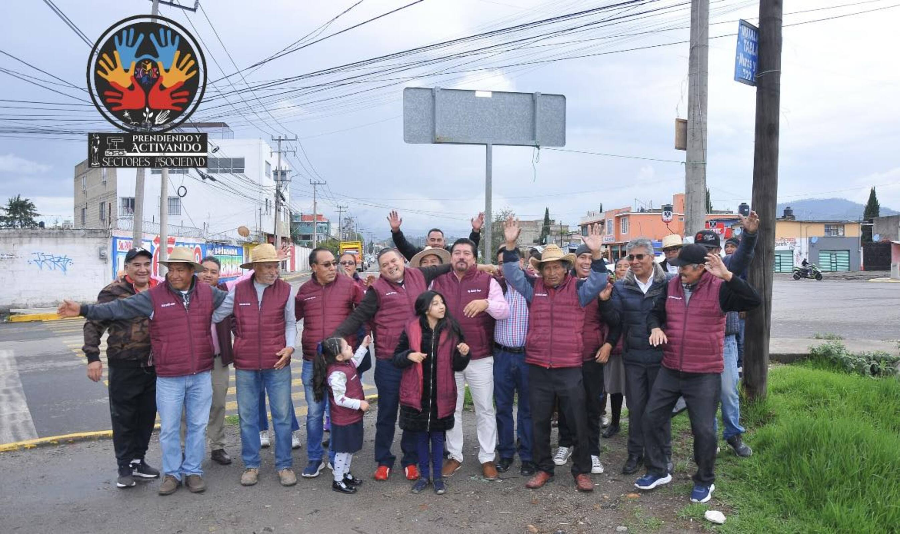

Apoyando a la comunidad para promover el bienestar general de Toluca sin fines de lucro, con objetivos culturales, educativos, deportivos, jurídicos y de inclusión.
Sobre Nosotros:
"Nuestra asociación 'Prendiendo y Activando' nace de la experiencia adquirida en trabajos realizados en otras agrupaciones y de la llegada de nuevos integrantes que comparten nuestra visión. Con alma, vida y corazón,
nos unimos para crear una organización dedicada a mejorar la calidad de vida de quienes más lo necesitan, facilitando la gestión de recursos y procedimientos para asegurar un acceso digno a servicios esenciales."
No te pierdas la oportunidad de vivir un evento mágico y lleno de tradición dedicado al rescate cultural en el hermoso Valle de Toluca. Te invitamos a la Bendición de los Elotes en el emblemático Centro Ceremonial Otomí, donde celebraremos nuestras raíces y costumbres en un entorno lleno de historia y espiritualidad. Aprovecha la oportunidad de adquirir tus boletos con nosotros para disfrutar de acceso gratuito y ser parte de esta experiencia única. La cita es el domingo 18 de agosto a las 10:00 a.m. ¡No faltes!
Promover el bienestar general de Toluca sin fines de lucro, con objetivos culturales, educativos, deportivos, jurídicos y de inclusión.
Defender e impactar en la sociedad con la solución de problemáticas que afectan a los ciudadanos en los distintos ámbitos.
Obra de teatro informativa en tu Delegación! El día de hoy se acudió a San Cristóbal Huichochitlán y San Andrés Cuesxcontitlan llevando dicha representación. Gracias a todos los presentes! Gustavo Anaya Maya.

¡Celebramos con alegr√≠a el primer domingo de agosto, agradeciendo a nuestra gran familia! Misa de Acci√≥n de Gracias en San Pablo Autopan. Obra teatral "Justicia Secuestrada" en San Mateo Oxtotitlán, Nueva Oxtotitlán y Col. Seminario. Además, no podemos dejar de felicitar a nuestra querida compa√±era Raquel Colin en su cumplea√±os. üéâ Gracias, Dios, por la oportunidad de crecer y trabajar juntos cada d√≠a. Agradecemos a cada uno de nuestros compa√±eros por su constante apoyo. ¡Vamos adelante con pasos agigantados! ü§ûü躂ô•Ô∏èüëèüèº